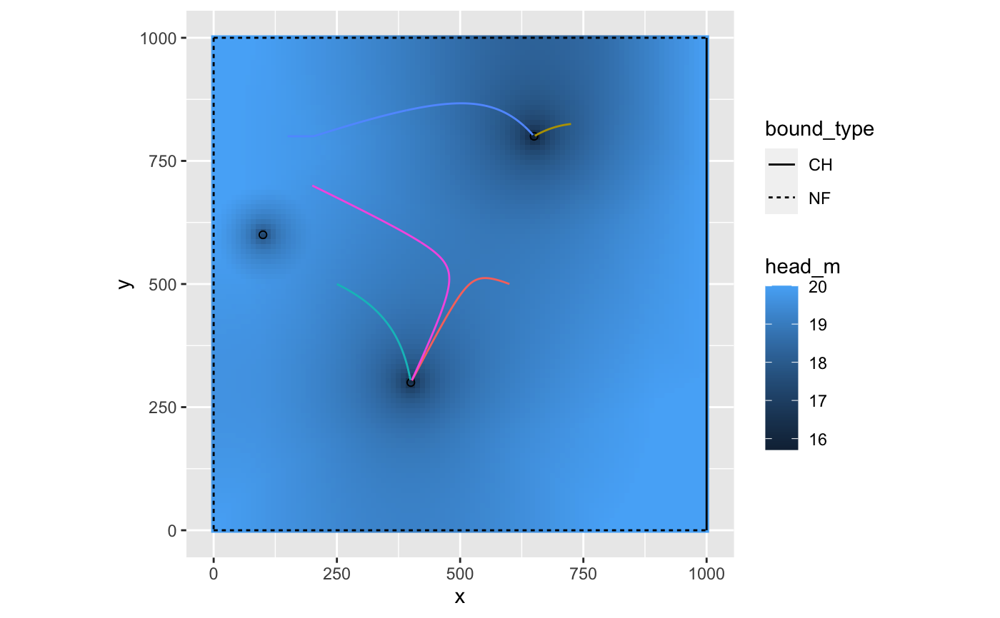

track_particles.RdTrack a particle in the aquifer from an original location to a pumping well, aquifer boundary, or outside of the wells ROI. Coordinates must be in meters.
track_particles(loc, wells, aquifer, t_max = 365, reverse = FALSE, step_dist = "auto", grid_length = 200)
| loc | Coordinate vector as |
|---|---|
| wells | Wells |
| aquifer | Aquifer as an |
| t_max | Maximum time, in days, for which to calculate travel time |
| reverse | If |
| step_dist | Determines the distance (m) to advance the particle each timestep. Can be set to "auto" or any numeric value in m. If "auto", the distance is 1/2 the grid cell width. If numeric, should be smaller than the grid spacing to ensure that particles are captured by wells. |
| grid_length | The number of grid cells in each dimension (x,y) to calculate exact particle velocity. |
Returns a data.frame containing the time and locations of particle. If loc is a data.frame,
columns in loc not named x or y are included in results.
This function numerically integrates particle paths using the Euler method. The time step of integration depends on velocity. Each time step is set so that the particle advances by a distance of step_dist (although there is a maximum time step 1 year). Particle tracking continues as long as:
The particle has not encountered a well or boundary
The particle velocity is greater than 0
The total time is less than t_max
The particle has travelled less than step_dist * 1e5
The domain is discretized and velocities are calculated on a 200 x 200 grid. The instantaneous velocity for each time
step is calculated using bilinear interpolation. If a particle is near a source well (i.e., an injection well if reverse = FALSE,
or a pumping well if reverse = TRUE), the velocity is calculated precisely at that location.
Note: get_capture_zone does not work with recharge_type == "D".
bounds_df <- data.frame(bound_type=c("NF","NF","CH","NF"), m=c(Inf,0,Inf,0),b=c(0,1000,1000,0)) aquifer <- define_aquifer(aquifer_type="confined",Ksat=0.001, n=0.4,h0=20,z0=20,bounds=bounds_df) uncon_aquifer <- define_aquifer(aquifer_type="unconfined", Ksat=0.001,n=0.4,h0=20,bounds=bounds_df) wells_df <- data.frame(x=c(400,100,650),y=c(300,600,800), Q=c(-1e-1,-1e-1,-1e-1),diam=c(1,1,1),R=c(500,100,600)) wells <- generate_image_wells(define_wells(wells_df),aquifer) gridded <- get_gridded_hydrodynamics(wells,aquifer,c(100,100),c(10,10)) particle_path <- track_particles(loc=c(600,500), wells, aquifer, t_max = 365*2) particle_path[nrow(particle_path),]#> # A tibble: 1 x 6 #> time_days x y status endpoint i #> <dbl> <dbl> <dbl> <chr> <lgl> <int> #> 1 666. 402. 304. Reached well TRUE 1particle_path <- track_particles(loc=c(600,500), wells, uncon_aquifer, t_max = 365*2) particle_path[nrow(particle_path),]#> # A tibble: 1 x 6 #> time_days x y status endpoint i #> <dbl> <dbl> <dbl> <chr> <lgl> <int> #> 1 627. 402. 304. Reached well TRUE 1loc <- data.frame(x=c(600,725,900,250,150,200),y=c(500,825,50,500,800,700)) loc$p <- letters[1:nrow(loc)] particle_path <- track_particles(loc, wells, aquifer, t_max=365*100) particle_path[particle_path$status!="On path",]#> # A tibble: 6 x 7 #> time_days x y status endpoint i p #> <dbl> <dbl> <dbl> <chr> <lgl> <int> <chr> #> 1 666. 402. 304. Reached well TRUE 1 a #> 2 19.4 651. 801. Reached well TRUE 2 b #> 3 365 900 50 Zero velocity TRUE 3 c #> 4 202. 399. 305. Reached well TRUE 4 d #> 5 606. 647. 803. Reached well TRUE 5 e #> 6 1036. 402. 305. Reached well TRUE 6 flibrary(ggplot2) ggplot() + geom_raster(data=gridded$head,aes(x,y,fill=head_m)) + geom_segment(data=aquifer$bounds,aes(x1,y1,xend=x2,yend=y2,linetype=bound_type)) + geom_point(data=wells[wells$wID==wells$orig_wID,],aes(x,y),shape=21) + geom_path(data=particle_path,aes(x,y,color=p),show.legend=FALSE) + coord_equal()